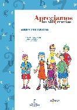
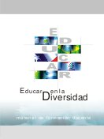
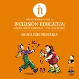

Educación inclusiva
- Apreciamos las diferencias
-

… Los alumnos con discapacidad son niños que presentan alguna limitación que dificulta su desarrollo y aprendizaje en la escuela y una convivencia normal con los otros alumnos.
Algunos de los grupos más numerosos de alumnos con discapacidad que requieren la atención de los profesionales de la educación son aquellos que presentan limitaciones y problemas intelectuales, físicos, visuales y auditivos. Y en ellos se centran las siguientes unidades didácticas. No obstante, hay muchos otros tipos posibles de alumnos con discapacidad, entre los que pueden destacarse aquellos que tienen problemas de aprendizaje, emocionales y de comportamiento, de comunicación, autismo o discapacidades graves y múltiples. Nos centraremos por último en uno de ellos (los alumnos con problemas emocionales o de comportamiento) a fin de sugerir un ejemplo de desarrollo de actividades que puede hacer el profesor con cualquier otro tipo de alumnos no expuesto previamente…
- Desarrollo de indicadores sobre educación inclusiva en Europa
-

… Este informe muestra los resultados del proyecto Desarrollo de indicadores – sobre educación inclusiva1 en Europa de la Agencia Europea para el Desarrollo de la Educación del Alumnado con Necesidades Educativas Especiales, según indicaciones de los miembros de su Junta de Representantes. El proyecto ha sido financiado por el Programa de Aprendizaje a lo Largo de la Vida de la Comunidad Europea y promovido por la Dirección General de Educación y Cultura de la Comisión Europea.
Los representantes de los Ministerios de Educación, participantes en el trabajo de la Agencia, se interesaron en el desarrollo de un conjunto de indicadores en el campo de la educación inclusiva. Tales indicadores se emplearían en cada país como instrumentos de evaluación de las políticas y prácticas educativas. Además, los indicadores podrían servir como instrumento en la recogida de datos de la Agencia acerca de determinados avances en los países europeos…
- Dicen de “Él”
-
…Dicen que el niño “Él” es extraño.
“Él” está en mi clase. Es mi amigo.
El niño “Él”, a veces, repite sin parar, movimientos con los brazos.
En las discotecas todo el mundo hace esas cosas.
Cuando “Él” se pone a bracear, yo hago lo mismo y canto. Así bailamos juntos a lo Michael Jackson. Es divertido… - Guía de actuaciones educativas en el ámbito de la comunicación y el lenguaje
-
… Durante los últimos años, la educación escolar ha sido objeto de una revisión, debate y reflexión profundos, que culminaron con la reciente promulgación de la LOE (2/2006 de 3 de mayo). Es en esta Ley en la que se sustenta nuestro trabajo, en los Reales Decretos de las enseñanzas mínimas de Educación Infantil, Educación Primaria y Educación Secundaria que la desarrollan.
En la LOE se recogen los fines y principios de la educación que permiten asentar el conjunto de la actividad educativa y su adecuada respuesta a todos los alumnos y alumnas contemplando la diversidad en las etapas educativas anteriormente mencionadas, garantizando el principio de equidad, que posibilita la igualdad de oportunidades, la inclusión educativa y la no discriminación. Tanto el Real Decreto 1513/2006 de 7 de diciembre, por el que se establecen las enseñanzas mínimas en la Educación Primaria, como el Decreto 126/2007, de 24 de mayo, por el que se establece la ordenación y el currículo de la Educación Primaria en la Comunidad Autónoma de Canarias otorgan especial relevancia a la comunicación lingüística entre todas las competencias básicas: “esta competencia se refiere a la utilización del lenguaje como instrumento de comunicación oral y escrita, de representación, interpretación y comprensión de la realidad, de construcción y transmisión del conocimiento y de organización y autorregulación del pensamiento, las emociones y la conducta” (BOC 902, de 6 de junio de 2007)…
- Educar en la Diversidad
-

… Los materiales de formación que aquí se presentan constituyen el principal producto del proyecto Educar en la diversidad en los países del MERCOSUR, desarrollado en Argentina, Brasil, Chile, Paraguay y Uruguay del 2000 al 2003. Este proyecto ha sido financiado por la Organización de Estados Americanos (OEA) y ha contado con el ase soramiento técnico de la Oficina Regional de Educación de la UNESCO para América Latina y el Caribe, UNESCO/Santiago…
- Guía de materiales para la inclusión educativa: discapacidad intelectual y del desarrollo (Educación infantil)
-
…Con esta guía pretendemos acercar el conocimiento de la discapacidad intelectual a la comunidad escolar y, para ello, hemos reunido información relevante, contenidos y actividades adaptadas al alumnado de cada etapa educativa. Se trata de considerar la diversidad no como un problema sino como una realidad cuyo conocimiento enriquece el aprendizaje de todos. De esta forma desarrollaremos entre todos una escuela que, además de recoger aspectos académicos, introducirá una cultura basada en el fomento de actitudes y valores basados en la solidaridad, tolerancia, empatía y respeto a los diferentes; una escuela que sensibilice y enseñe a mirar de una nueva forma a las personas con discapacidad intelectual. Ésta es nuestra meta.…
- Guía de materiales para la inclusión educativa: discapacidad intelectual y del desarrollo (Educación primaria)
-

…Con esta guía pretendemos acercar el conocimiento de la discapacidad intelectual a la comunidad escolar y, para ello, hemos reunido información relevante, contenidos y actividades adaptadas al alumnado de cada etapa educativa. Se trata de considerar la diversidad no como un problema sino como una realidad cuyo conocimiento enriquece el aprendizaje de todos. De esta forma desarrollaremos entre todos una escuela que, además de recoger aspectos académicos, introducirá una cultura basada en el fomento de actitudes y valores basados en la solidaridad, tolerancia, empatía y respeto a los diferentes; una escuela que sensibilice y enseñe a mirar de una nueva forma a las personas con discapacidad intelectual. Ésta es nuestra meta.…
- Guía de materiales para la inclusión educativa: discapacidad intelectual y del desarrollo (Educación secundaria)
-
…Con esta guía pretendemos acercar el conocimiento de la discapacidad intelectual a la comunidad escolar y, para ello, hemos reunido información relevante, contenidos y actividades adaptadas al alumnado de cada etapa educativa. Se trata de considerar la diversidad no como un problema sino como una realidad cuyo conocimiento enriquece el aprendizaje de todos. De esta forma desarrollaremos entre todos una escuela que, además de recoger aspectos académicos, introducirá una cultura basada en el fomento de actitudes y valores basados en la solidaridad, tolerancia, empatía y respeto a los diferentes; una escuela que sensibilice y enseñe a mirar de una nueva forma a las personas con discapacidad intelectual. Ésta es nuestra meta.…
- Guía multimedia de recursos educativos para alumnado con necesidades educativas especiales
-

… El sistema educativo español ha iniciado en los años 80 una transformación de singular importancia rompiendo con décadas de marginación y desatención de aquella parte de la población que, debido a sus características personales, demandaba del sistema educativo una atención especial. Si en el pasado las personas con algún tipo de discapacidad habían permanecido ajenas, en su mayoría, a los procesos de escolarización o relegadas a centros y aulas especiales, desde esta década se impone una nueva concepción: su integración en la escuela ordinaria.
El concepto de integración, tal y como es empleado habitualmente, se refiere a la educación en centros ordinarios, no específicos, de los alumnos y alumnas con algún grado de discapacidad, en la creencia de que todo el alumnado tiene derecho a recibir educación junto a sus compañeros y compañeras en un medio normalizado.
Si el tipo de discapacidad no permite la integración y normalización se desarrollan todo un conjunto de medidas bajo el principio de “atención educativa en el medio menos restringido posible” indicando así una secuencia que permita la atención educativa en función de las necesidades que presente el estudiante y de su desempeño escolar…
- Inclusión social: Estrategias organizativas y metodológicas
-
…La inclusión social es una función importante en la mejora de la calidad de vida e influye notablemente en el desarrollo posterior del éxito personal, social y escolar. Por el contrario, la incompetencia social se relaciona con un variado abanico de desajustes y dificultades compatibles con trastornos como son: baja aceptación, rechazo, ignorancia y aislamiento que derivan en problemas emocionales y escolares, conductas disociales y diversos problemas de salud mental en la vida adulta.
El hecho de que un alumno/a esté físicamente en un centro no implica que esté socialmente integrado, ni que comparta una cultura y unos valores con sus compañeros y compañeras, ni siquiera que se sienta valorado. Es preciso programar y diseñar actuaciones que faciliten la inclusión social y que impliquen el desarrollo de habilidades sociales, aprender a convivir, respetar y valorar a los otros. Estas habilidades no siempre se aprenden en la individualidad, se aprende a convivir conviviendo, dentro de las aulas, en los recreos, en los distintos espacios y actividades del centro y de la comunidad…
- Index para la Inclusión
-

… Esta versión del Index para la Inclusión está especialmente diseñada para apoyar las mejoras inclusivas del juego y el aprendizaje en Educación Infantil. Además de contar con un material impreso muy completo, contiene un CD que permite a los centros compartir más fácilmente los materiales y un folleto adicional que resume la finalidad y contenidos de esta carpeta.
La inclusión es considerada en el Indexa, desde una perspectiva amplia, como un enfoque para mejorar todos los aspectos de un centro de modo que los niños, sus familias y el personal se puedan sentir bienvenidos, implicados y valorados. Por lo tanto, el Indexa está pensado para integrarse en un proceso de planificación ordinario, y proporciona un medio para mejorar el centro en su conjunto, en lugar de centrarse en un grupo concreto de niños.
- Intervenciones psicoeducativas en el espectro autista
-
…Tradicionalmente las intervenciones en el espectro autista han sido efectuadas desde distintos campos del saber (psicología, psiquiatría infantil, pedagogía, etc.) ignorando cada uno el quehacer de los otros. Al hablar de intervenciones psicoeducativas se pretende entonces aunar esfuerzos entre la psicología y la educación en el abordaje de una problemática que por definirse justamente como “espectro” muestra su complejidad. Los resultados obtenidos son de mutua importancia para todos aquellos que de uno u otro modo participaron de esta tesis…
- La educación que queremos (modelo de educación inclusiva de FEAPS)
-
…Este documento pretende ser un conjunto de propósitos y directrices que orientan y guían la acción educativa para ofrecer la mejor respuesta a las necesidades de formación de la sociedad y de las personas, partiendo de una visión de la sociedad, de su cultura, valores y principios o de una demanda de transformación de esa sociedad y partiendo también de una visión del ser humano y de su inclusión en la sociedad como ciudadano de pleno derecho.
Expresa los planteamientos de FEAPS en relación con la educación, la educación que queremos. Una educación que, como derecho, es para todos y para toda la vida. Una educación no centrada meramente en el desarrollo de competencias tradicionalmente académicas sino, esencialmente, en competencias para el desarrollo de los proyectos singulares de vida de cada alumno en un contexto social justo. Un sistema educativo anclado en un modelo social concreto. Con la intención explícita de que un modelo educativo debe servir para transformar el modelo social y de que un modelo social debe llevar emparejado un modelo de educación coherente en principios y valores…
- Las necesidades educativas especiales en HAURRESKOLAK
-

… Este documento tiene como función orientar a las educadoras y los educadores del Consorcio HAURRESKOLAK en la atención a los bebés con necesidades educativas especiales o en riesgo de tenerlas.
De todo el colectivo de educadoras y educadores es conocida la importancia de la actuación educativa y asistencial precoz en los niños y niñas con una discapacidad en orden a reforzar determinados aspectos de su desarrollo así como en la detección y en la prevención de necesidades educativas especiales…
- Reflexión ética sobre la inclusión en la escuela
-
…La búsqueda del bien de la persona se ha llevado a cabo, generalmente a través de la prudencia, pero es necesario ir más allá y tener en cuenta que el objetivo fundamental es garantizar y proteger los derechos de las personas, y sobre todo de las personas más vulnerables, haciéndolo desde la Ética, entendiendo ésta como un saber filosófico, definiéndola como el análisis sistemático, crítico y formal de la conducta humana para discernir lo que es correcto o incorrecto, bueno o malo; o también el estudio sistemático del comportamiento humano en función de una escala de valores. Todo ello, teniendo en cuenta unos Principios Éticos aceptados universalmente, como por ejemplo, la libertad, la dignidad, no hacer daño, hacer el bien.
A partir de este enfoque se presentan unos Principios Universales de la Bioética que se traducen en: Principio de Beneficencia (hacer el bien), No-Maleficencia (hacer el menor mal posible), Autonomía (respeto a la capacidad de decisión de la persona), Justicia (igualdad y equidad). Estos tienen que ser un referente que nos oriente a una buena práctica. Siendo un instrumento a tener en cuenta para analizar la calidad ética de las decisiones profesionales: ¿qué hacer en cada caso?, ¿qué acción se recomienda?, ¿cuáles son los argumentos en contra?, ¿qué respuesta tenemos?, ¿cuál es el posicionamiento de los profesionales? Todo ello analizando el contexto educativo y social, valorando los problemas éticos, cuáles son los principios implicados en cada caso, y cuáles son los valores morales del alumno, de la familia y de los profesionales, para llevar a cabo nuestra actuación…
Publicaciones presentadas en esta página
- Apreciamos las diferencias
- Desarrollo de indicadores sobre educación inclusiva en Europa
- Dicen de “Él”
- Guía de actuaciones educativas en el ámbito de la comunicación y el lenguaje
- Educar en la Diversidad
- Guía de materiales para la inclusión educativa: discapacidad intelectual y del desarrollo (Educación infantil)
- Guía de materiales para la inclusión educativa: discapacidad intelectual y del desarrollo (Educación primaria)
- Guía de materiales para la inclusión educativa: discapacidad intelectual y del desarrollo (Educación secundaria)
- Guía multimedia de recursos educativos para alumnado con necesidades educativas especiales
- Inclusión social: Estrategias organizativas y metodológicas
- Index para la Inclusión
- Intervenciones psicoeducativas en el espectro autista
- La educación que queremos (modelo de educación inclusiva de FEAPS)
- Las necesidades educativas especiales en HAURRESKOLAK
- Reflexión ética sobre la inclusión en la escuela
La edición y mantenimiento de EspectroAutista.Info se ha descontinuado. Para conocer todos los detalles lea la última noticia.